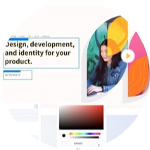

Work Experience

Homepage
Office
I applied and passed for practice part of training at the Homepage digital agency, and then worked for them for a while. Those were my early beginnings in discovering successful teamwork. I worked as a Front-End developer, mostly on creating Wordpress sites, theming and creating them from scratch. Also I worked on small Facebook applications.
Katipult
Remote
Afterward, I was in a team of various profiled and experienced developers, working on a crowdfunding software for a Canadian company Katipult. In close interaction between designers and backend developers, some of my duties here were creating responsive reusable templates, email templates, bug fixing, and other new features in a dashboard.
Altereos
Remote
Freelancing and work on interesting projects got me to this client. We were developing components for page builder.

Optima
Remote
Knowledge of react and my desire to expand my work area with a mobile apps took me to the Optima mobile app and React Native. For this chalenge React Native was logical choice, because it combines the best parts of native development with React and it's a best-in-class JavaScript library for building user interfaces for Android and iOS.